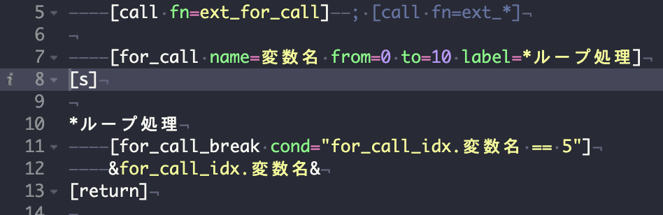

マクロ・プラグイン
sub.sn の定義マクロ
[sys_scenario_start] シナリオ開始時共通処理
タイトルからゲーム本編を開始する際の処理を行なう。
引数無し。
シナリオファイル冒頭に記述するべき。
[sys_title_start] タイトル開始共通処理
ゲーム本編を開始する際の処理を行なう。
引数無し。
タイトルから本編、あるいはしおりロードから本編を開始する際に呼ぶ。
クリック待ち記号、フォント、セーブロード・設定画面などを準備する。
[wc] 文字数分のウェイトを入れる
文字数分のウェイトを入れる
| 属性 | 必須 | 省略時 | 値域・型 | コメント |
|---|---|---|---|---|
| time | 必須 | 整数値 | 0.0〜 |
文字数を指定。 指定した文字数 x 文字表示ウェイト 分のウェイトを行なう |
[plc] 改ページ
改ページと関連処理を行なう。
改ページ記号を表示する前に「自動読み進み状態で」「音声が再生中」なら音声再生終了を待つ。
改ページ記号を表示しクリックを待ち、
押下後[er]（テキストを消去）し[record_place]（ゲーム状態をバッファに退避）する。
「履歴画面で選択位置から再開する」機能は配布状態では無効になっている。
『; [h_ss_upd] ; 〜』
『; [h_save] ; 〜』
のコメントを外し、シナリオファイル最初の[grp]直後に[h_save]を置くと有効になる。
| 属性 | 必須 | 省略時 | 値域・型 | コメント |
|---|---|---|---|---|
| no_voice_stop | false | Boolean | trueなら改ページ後、音声（バッファ名「音声」の効果音）をフェードアウトしない | |
| no_se_stop | false | Boolean | trueなら改ページ後、効果音（バッファ名「SE」の効果音）をフェードアウトしない | |
| visible | true | Boolean | trueで改ページ記号を表示、falseで非表示 |
[after_choice] 選択肢直後処理
[link]など選択肢直後にコールする。
引数無し。
[record_place]などを呼んでいます。
[sys_resume_load] レジューム処理
前回終了ポイントからの再開（レジューム）を行なう。
引数無し。
sys:doResume が false なら何もせず抜ける。
autoResume が false のときは [ask_ync] で「前回終了ポイントから再開しますか？」と確認し、「いいえ」なら抜ける。
再開する場合は _archive.sn の *do_load_resume へジャンプする。
テンプレでは main.sn の起動処理末尾で [sys_resume_load cond=!const.sn.key.escape] として呼んでいる（Esc 押下起動でレジュームを飛ばせる）。
[sys_resume_save] レジューム退避処理
現在のゲーム状態をレジューム用スロットへ退避する。
引数無し。
_archive.sn の *do_save_resume を [call] する。
テンプレでは [plc]（改ページ）と [after_choice]（選択肢直後）から呼ばれる。
[txt_lay_v_left] テキストレイヤ縦書き左設定
文字レイヤを設定する。サンプルゲーム「櫻の樹の下には」の縦書き設定。
このマクロで文字レイヤ（page=back）に設定しておき、
[grp]で場面転換と共に文字レイヤの設定を変えるような使い方をする
| 属性 | 必須 | 省略時 | 値域・型 | コメント |
|---|---|---|---|---|
| layer | mes | レイヤ名 | 処理対象の文字レイヤ | |
| page | back | fore、back | ページの裏表 | |
| visible | true | Boolean | true：表示、false：非表示 | |
| l | 40 | 整数値 | テキストウインドウの左端横座標 | |
| w | 292 | 整数値 | テキストウインドウの横幅 | |
| pl | 属性l + 26 | 整数値 | テキストウインドウの左端から内側方向への、文字表示領域との間隔 | |
| pt | 66 | 整数値 | テキストウインドウの上端から内側方向への、文字表示領域との間隔 | |
| pr | 画面横幅 -(属性l +属性w ) + 26 | 整数値 | テキストウインドウの右端から内側方向への、文字表示領域との間隔 | |
| pb | 66 | 整数値 | テキストウインドウの下端から内側方向への、文字表示領域との間隔 | |
| fcol | 0xffffff | 色指定。0x000000など | テキスト色 | |
| b_color | 0x000000 | 色指定。0x000000など | テキストウインドウの背景色 | |
| b_alpha | sys:TextLayer.Back.Alpha | 0.0〜1.0（実数） | テキストウインドウの背景の透過度。 0（完全透明）〜0.5（半透明）〜1（不透明） |
[txt_lay_v_center] テキストレイヤ縦書き中設定
文字レイヤを設定する。「txt_lay_v_left（テキストレイヤ縦書き左設定）」を画面中央に移動したもの。
「txt_lay_v_left（テキストレイヤ縦書き左設定）」の設定に加え以下指定を行なったもの
| 属性 | 必須 | 省略時 | 値域・型 | コメント |
|---|---|---|---|---|
| l | 366 | 整数値 | テキストウインドウの左端横座標 |
[txt_lay_v_center_wide] テキストレイヤ縦書きWide中設定
文字レイヤを設定する。「txt_lay_v_center（テキストレイヤ縦書き中設定）」を画面中央に移動し、幅を広げたもの。
「txt_lay_v_center（テキストレイヤ縦書き中設定）」の設定に加え以下指定を行なったもの
| 属性 | 必須 | 省略時 | 値域・型 | コメント |
|---|---|---|---|---|
| l | 294 | 整数値 | テキストウインドウの左端横座標 | |
| w | n、固定 | 436 | 整数値 | テキストウインドウの横幅 |
[txt_lay_fullscreen] テキストレイヤ全画面設定
文字レイヤを設定する。全画面を覆うような設定
| 属性 | 必須 | 省略時 | 値域・型 | コメント |
|---|---|---|---|---|
| layer | mes | レイヤ名 | 処理対象の文字レイヤ | |
| page | back | fore、back | ページの裏表 | |
| visible | true | Boolean | true：表示、false：非表示 | |
| l | 16 | 整数値 | テキストウインドウの左端横座標 | |
| w | 画面横幅 -16 *2 | 整数値 | テキストウインドウの横幅 | |
| pl | 28 | 整数値 | テキストウインドウの左端から内側方向への、文字表示領域との間隔 | |
| pt | 42 | 整数値 | テキストウインドウの上端から内側方向への、文字表示領域との間隔 | |
| pr | 639 | 整数値 | テキストウインドウの右端から内側方向への、文字表示領域との間隔 | |
| pb | 479 | 整数値 | テキストウインドウの下端から内側方向への、文字表示領域との間隔 | |
| fcol | 0xffffff | 色指定。0x000000など | テキスト色 | |
| b_color | 0x000000 | 色指定。0x000000など | テキストウインドウの背景色 | |
| b_alpha | sys:TextLayer.Back.Alpha | 0.0〜1.0（実数） | テキストウインドウの背景の透過度。 0（完全透明）〜0.5（半透明）〜1（不透明） |
[txt_lay_h_bottom_wide] テキストレイヤ横書きWide下設定
文字レイヤを設定する。「txt_lay_fullscreen（テキストレイヤ全画面設定）」を画面下に移動し、幅を広げたもの。
実体は [txt_lay_fullscreen * t=472 h=266 max_row=6]。引数（layer / page / visible / fcol / b_color / b_alpha / style / r_style / r_align など）は [txt_lay_fullscreen] と同じで、指定すればそのまま渡される。
| 属性 | 必須 | 省略時 | 値域・型 | コメント |
|---|---|---|---|---|
| t | 472 | 実数 | テキストウインドウの上端 |
[txt_lay_window_top] テキストレイヤ横書き上小窓設定
画面上端に寄せた横書きの小窓テキストレイヤ。
実体は [txt_lay_fullscreen] を座標指定つきで呼ぶラッパー（各座標は 1.28 倍でスケール、sysmenu_top=-200 でシステムメニューを窓の上へ寄せる）。引数は [txt_lay_fullscreen] と同じ（layer / page / visible / fcol / b_color / b_alpha / style / r_style / r_align など）。
[txt_lay_window_bottom] テキストレイヤ横書き下小窓設定
画面下端に寄せた横書きの小窓テキストレイヤ。
実体は座標指定つきの [txt_lay_fullscreen] ラッパー。引数は [txt_lay_fullscreen] と同じ。
[txt_lay_window_middle] テキストレイヤ横書き中央小窓設定
画面中央に寄せた横書きの小窓テキストレイヤ。
実体は座標指定つきの [txt_lay_fullscreen] ラッパー。引数は [txt_lay_fullscreen] と同じ。
[sysmenu_draw_v] システムメニュー描画処理（縦書き）
文字レイヤ mes_sysmenu に表示する縦書き用システムメニューを設定する。
このマクロを改造し、ボタンの画像変更・位置変更・増減を行える。
[txt_lay_v_left] 系の縦書きテキストレイヤ設定から呼ばれる。useSysMenu が false なら何もしない。
[sysmenu_draw_h] システムメニュー描画処理（横書き）
文字レイヤ mes_sysmenu に表示する横書き用システムメニューを設定する。
[sysmenu_draw_v] の横書き版。ボタンを回転させず横一列に並べる。
[txt_lay_fullscreen] / [txt_lay_h_bottom_wide] 系の横書きテキストレイヤ設定から呼ばれる。useSysMenu が false なら何もしない。
[sys_menu] システムメニュー表示切り替え
文字レイヤ mes_sysmenu のシステムメニューを表示／非表示する。
このマクロを改造し、ボタンの画像変更・位置変更・増減を行える。
| 属性 | 必須 | 省略時 | 値域・型 | コメント |
|---|---|---|---|---|
| visible | true | Boolean | true：表示、false：非表示（useSysMenu が true のときのみ効く） |
[grp] 場面転換
画面を暗転し背景を変更する。
文字レイヤをフェードアウトし、
クロスフェードしながら背景画像（レイヤ名baseの画像レイヤ）を変更、
前景レイヤ（レイヤ名0〜2の画像レイヤ）をクリアor画像変更し、
文字レイヤをフェードインする。
| 属性 | 必須 | 省略時 | 値域・型 | コメント |
|---|---|---|---|---|
| bg | 必須 | 何もしない | 画像ファイル名 | 背景レイヤに対する画像ファイルを指定する |
| fb | 何もしない | [add_face]で登録した差分名称（半角カンマ区切りで複数可能） | 背景レイヤに対する差分名称を指定する | |
| l0 | クリアする | 画像ファイル名 | 前景レイヤ0に対する画像ファイルを指定する | |
| f0 | 何もしない | [add_face]で登録した差分名称（半角カンマ区切りで複数可能） | 前景レイヤ0に対する差分名称を指定する | |
| pos0 | c | c、横座標 | 前景レイヤ0に対する横座標を指定する。 | |
| left0 | 0（pos指定が優先） | 画面左上を(0, 0)とする座標 |
前景レイヤ0に対する表示座標を指定する。 ※left使用時はtopも必須です | |
| top0 | ||||
| o0 | 何もしない | 0.0〜1.0（実数） |
前景レイヤ0に対するレイヤの透過度。 0（完全透明）〜0.5（半透明）〜1（不透明） | |
| l1 | クリアする | 画像ファイル名 | 前景レイヤ1に対する画像ファイルを指定する | |
| f1 | 何もしない | [add_face]で登録した差分名称（半角カンマ区切りで複数可能） | 前景レイヤ1に対する差分名称を指定する | |
| pos1 | c | c、横座標 | 前景レイヤ1に対する横座標を指定する。 | |
| left1 | 0（pos指定が優先） | 画面左上を(0, 0)とする座標 |
前景レイヤ1に対する表示座標を指定する。 ※left使用時はtopも必須です | |
| top1 | ||||
| o1 | 何もしない | 0.0〜1.0（実数） |
前景レイヤ1に対するレイヤの透過度。 0（完全透明）〜0.5（半透明）〜1（不透明） | |
| l2 | クリアする | 画像ファイル名 | 前景レイヤ2に対する画像ファイルを指定する | |
| f2 | 何もしない | [add_face]で登録した差分名称（半角カンマ区切りで複数可能） | 前景レイヤ2に対する差分名称を指定する | |
| pos2 | c | c、横座標 | 前景レイヤ2に対する横座標を指定する。 | |
| left2 | 0（pos指定が優先） | 画面左上を(0, 0)とする座標 |
前景レイヤ2に対する表示座標を指定する。 ※left使用時はtopも必須です | |
| top2 | ||||
| o2 | 何もしない | 0.0〜1.0（実数） |
前景レイヤ2に対するレイヤの透過度。 0（完全透明）〜0.5（半透明）〜1（不透明） | |
| rule | 画面全体ピクセルで同時にクロスフェードする | 画像ファイル名（swf不可） | [trans]と同じ | |
| その他[trans]と同じ属性 | ||||
| time | 1000 | ミリ秒 | 背景・前景の画像レイヤ変化にかける時間 | |
| txt_time | 300 | ミリ秒 | 文字レイヤ変化にかける時間 | |
| nofo_txt | false | Boolean | trueなら文字レイヤをフェードアウトしない | |
| nofi_txt | false | Boolean | trueなら文字レイヤをフェードインしない | |
| se | 何もしない | 効果音ファイル名 | 場面転換と同時に再生する効果音 | |
[bgm] ＢＧＭ切り替え
BGMをクロスフェードする。
| 属性 | 必須 | 省略時 | 値域・型 | コメント |
|---|---|---|---|---|
| fn | 必須 | BGM音声ファイル名 | 再生する音声ファイル名 | |
| time | 再生中の曲を瞬時に停止し、指定曲を即座に再生する | ミリ秒 | 変化にかける時間 |
[se] 効果音を再生
[playse]に引数省略時音声停止機能を付けたもの。
| 属性 | 必須 | 省略時 | 値域・型 | コメント |
|---|---|---|---|---|
| fn | 音声停止 | 音声ファイル名 | 再生する音声ファイル名 | |
| buf | 音声 | 効果音を識別するトラック名 | トラック名を変えれば同時に複数の音を操作することが出来ます |
_yesno.sn の定義マクロ
[ask_ync] プレイヤー意志確認
プレイヤーに「はい」「いいえ」等の二択で確認を行なう。
プレイヤーが押下した結果をtmp:_yesnoに「y」か「n」で返す
| 属性 | 必須 | 省略時 | 値域・型 | コメント |
|---|---|---|---|---|
| mes | 必須 | String | プレイヤーに質問したい文言 |
ext_fg.sn の定義マクロ
[fg] レイヤ画像を変更
クロスフェードしながらレイヤ画像を変更する
| 属性 | 必須 | 省略時 | 値域・型 | コメント |
|---|---|---|---|---|
| layer | 必須 | レイヤ名 | 処理対象のレイヤ | |
| page | fore | fore、back | ページの裏表 | |
| fn | レイヤをクリア | 画像ファイル名 | 基本画像ファイルを指定する | |
| alpha | 1.0 | 0.0〜1.0（実数） | レイヤの透過度。0（完全透明）〜0.5（半透明）〜1（不透明） | |
| time | 500 | ミリ秒数 | 変化にかける時間 | |
| … | … | … | 引数は[lay]（画像レイヤ）、[trans]（ページ裏表を交換）の物を指定。 立ち絵なら主にlayer、fn、pos、rule、time属性を使用すれば表現できる |
[img] 画像レイヤ設定サブ
背景レイヤに画像を設定する
| 属性 | 必須 | 省略時 | 値域・型 | コメント |
|---|---|---|---|---|
| layer | 必須 | レイヤ名 | 処理対象のレイヤ | |
| page | back | fore、back | ページの裏表 | |
| fn | レイヤをクリア | 画像ファイル名 | 基本画像ファイルを指定する | |
| alpha | 1.0 | 0.0〜1.0（実数） | レイヤの透過度。0（完全透明）〜0.5（半透明）〜1（不透明） | |
| … | … | … | 引数は[lay]（画像レイヤ）、[trans]（ページ裏表を交換）の物を指定。主にlayer、fn、pos属性 |
[fg_fi] フェードイン
フェードインしながらレイヤ画像を出現させる
| 属性 | 必須 | 省略時 | 値域・型 | コメント |
|---|---|---|---|---|
| layer | 0 | レイヤ名 | 処理対象のレイヤ | |
| time | 500 | ミリ秒数 | 変化にかける時間 | |
| left | （現在位置） | ドット数 | 移動元・横位置の絶対位置 | |
| top | 移動元・縦位置の絶対位置 | |||
| x | （移動しない） | ドット数 | 移動先・横位置の絶対位置 | |
| 必須 | 移動先・縦位置の絶対位置（x,yは x='=-50'だと相対位置移動、x='-50'だと絶対位置移動） | |||
| alpha | 0 | 0.0〜1.0（実数） | レイヤの透過度（初期値）。0（完全透明）〜0.5（半透明）〜1（不透明） | |
| to_alpha | 1 | レイヤの透過度（終端値） | ||
| scale_x | 1 | ドット数 | 移動元・横方向拡大／縮小するか。負の値ならレイヤを左右反転 | |
| scale_y | 移動元・縦方向拡大／縮小するか。負の値ならレイヤを上下反転 | |||
| to_scale_x | 1 | ドット数 | 移動先・横方向拡大／縮小するか。負の値ならレイヤを左右反転 | |
| to_scale_y | 移動先・縦方向拡大／縮小するか。負の値ならレイヤを上下反転 | |||
| ease | Circular.easeOut | イージング名 | alpha・x・yなど値変化のイージング（値の変化の仕方）を指定する。 イージングの変化はこちらの図が分かりやすい。 指定できる値はplgTweensyの[tsy]を参照 | |
| no_wait | false | Boolean | trueを指定すると、終了を待たない | |
| … | … | … | その他引数は[lay]（画像レイヤ）、[trans]（ページ裏表を交換）の物を指定。 立ち絵なら主にlayer、fn、pos、rule、time属性を使用すれば表現できる |
[fg_fo] フェードアウト
フェードアウトしながらレイヤ画像を消去する
| 属性 | 必須 | 省略時 | 値域・型 | コメント |
|---|---|---|---|---|
| layer | 0 | レイヤ名 | 処理対象のレイヤ | |
| time | 500 | ミリ秒数 | 変化にかける時間 | |
| x | （移動しない） | ドット数 | 移動先・横位置の絶対位置 | |
| 必須 | 移動先・縦位置の絶対位置（x,yは x='=-50'だと相対位置移動、x='-50'だと絶対位置移動） | |||
| alpha | 0 | 0.0〜1.0（実数） | レイヤの透過度（終端値・[fg_fi]と違う）。0（完全透明）〜0.5（半透明）〜1（不透明） | |
| ease | Circular.easeOut | イージング名 | alpha・x・yなど値変化のイージング（値の変化の仕方）を指定する。 イージングの変化はこちらの図が分かりやすい。 指定できる値はplgTweensyの[tsy]を参照 | |
| no_wait | false | Boolean | trueを指定すると、終了を待たない |
[fg_squat] レイヤを屈伸させる
クロスフェードしながらレイヤ画像を変更する
| 属性 | 必須 | 省略時 | 値域・型 | コメント |
|---|---|---|---|---|
| layer | 0 | レイヤ名 | 処理対象のレイヤ | |
| time | 250 | ミリ秒数 | 変化にかける時間 | |
| 必須 | 50 | ドット数 | 下へ沈ませる移動量 | |
| ease | Circular.easeOut | イージング名 | 揺れのイージング（値の変化の仕方）を指定する。 イージングの変化はこちらの図が分かりやすい。 指定できる値はplgTweensyの[tsy]を参照 | |
| repeats | 1 | 0〜（整数） | 繰返し回数。0は無限ループ | |
| no_wait | false | Boolean | trueを指定すると、終了を待たない |
[fg_shake] レイヤを震わせる
クロスフェードしながらレイヤ画像を変更する
| 属性 | 必須 | 省略時 | 値域・型 | コメント |
|---|---|---|---|---|
| layer | 0 | レイヤ名 | 処理対象のレイヤ | |
| time | 250 | ミリ秒数 | ひと揺れにかける時間（実際に掛かる時間 = time * repeats *5【マクロ内の[push_tsy_seq]の数】） | |
| x | 5 | ドット数 | 左右へ揺らす最大移動量 | |
| repeats | 5 | 0〜（整数） | 繰返し回数。0は無限ループ | |
| no_wait | false | Boolean | trueを指定すると、終了を待たない |
[fg_sidestep] レイヤを反復横跳びさせる
クロスフェードしながらレイヤ画像を変更する
| 属性 | 必須 | 省略時 | 値域・型 | コメント |
|---|---|---|---|---|
| layer | 0 | レイヤ名 | 処理対象のレイヤ | |
| time | 250 | ミリ秒数 | 一動作にかける時間（実際に掛かる時間 = time * 4） | |
| x | 25 | ドット数 | 左右へ揺らす移動量 | |
| 必須 | 25 | ドット数 | 下へ沈ませる移動量 | |
| repeats | 1 | 0〜（整数） | 繰返し回数。0は無限ループ | |
| no_wait | false | Boolean | trueを指定すると、終了を待たない |
[zoom_tsy] ズームイン・アウトのトゥイーン
レイヤをレイヤ中心を軸にズームさせながら出現／退場させる。
visible=true なら拡大率 0.5→1 で出現、false なら 1→0.5 で退場（退場後 visible=false）。トゥイーンは Back.InOut で行ない、[wait_tsy] で終了を待つ。
| 属性 | 必須 | 省略時 | 値域・型 | コメント |
|---|---|---|---|---|
| layer | 0 | レイヤ名 | 処理対象のレイヤ | |
| fn | レイヤをクリア | 差分名称（カンマ区切りで複数可） | 基本画像ファイルを指定する | |
| time | 250 | 0〜；ミリ秒 | 一動作にかける時間（実際に掛かる時間 = time * 4） | |
| visible | true | Boolean | true：ズームインで表示、false：ズームアウトで非表示 | |
| ease | Linear.None | イージング名 | 値変化のイージング（値の変化の仕方）を指定する |
ext_fg2.sn の定義マクロ
立ち絵を【名前】で扱う簡易 [fg]。表示中の立ち絵を画面幅で自動的に均等配置し、add／del／swap で出し入れする。const.fg2_attention_filter を立てると「最後に動いた立ち絵」を目立たせ、他を暗くできる（フィルタ名は sn.fg2.attention_filter）。同時表示できるレイヤ数はレイヤ 0〜2（自動調査で増やせる）。
[fg2] 立ち絵の扱いが簡単な[fg]
レイヤ画像を変更する。立ち絵の扱いが簡単な [fg]。
画像ファイル名は【名前_表情やポーズ】形式。同じ【名前】を再指定すると既存レイヤの差分だけ差し替え、未登場なら空きレイヤへ [tsy] で移動＋フェードインする。
| 属性 | 必須 | 省略時 | 値域・型 | コメント |
|---|---|---|---|---|
| fn | 【名前_表情やポーズ】形式の画像ファイル名 | 差分名称（カンマ区切りで複数可） | ||
| face | 何もしない | 差分名称（カンマ区切りで複数可） | 差分名称または画像ファイル名。[fg2 fn="a" face="b,c,d"] なら「基本a」の上に b, c, d を順に重ねる | |
| add | 自動で追加位置を決定 | l、cl、c、cr、r | 追加位置ヒント。左／中左／中央／中右／右への追加をうながす | |
| del | なにもしない | 追加時の【名前】 | 指定した立ち絵を削除する | |
| swap | なにもしない | 追加時の【名前】 | fnと同時に指定すると、swapを退場・fnを入場と入れ替わりに出現させる | |
| alpha | 1.0 | 0.0〜1.0（実数） | フェードイン先の透過度 | |
| time | 500 | 0〜；ミリ秒 | 移動・フェードにかける時間 | |
| ease | Cubic.Out | イージング名 | 移動のイージング |
[fg2_squat] 立ち絵を屈伸させる
【名前】で指定した立ち絵を屈伸させる。[fg_squat] を名前引きで呼ぶラッパー。
| 属性 | 必須 | 省略時 | 値域・型 | コメント |
|---|---|---|---|---|
| name | 必須 | 追加時の【名前】 | 対象の立ち絵 | |
| time | 250 | 0〜；ミリ秒 | 変化にかける時間 | |
| y | 50 | ドット数 | 下へ沈ませる移動量 | |
| ease | Linear.None | イージング名 | 揺れのイージング | |
| repeats | 1 | 0〜（整数） | 繰返し回数。0は無限ループ | |
| no_wait | false | Boolean | trueを指定すると、終了を待たない |
[fg2_shake] 立ち絵を震わせる
【名前】で指定した立ち絵を震わせる。[fg_shake] を名前引きで呼ぶラッパー。
| 属性 | 必須 | 省略時 | 値域・型 | コメント |
|---|---|---|---|---|
| name | 必須 | 追加時の【名前】 | 対象の立ち絵 | |
| time | 250 | 0〜；ミリ秒 | ひと揺れにかける時間（実際に掛かる時間 = time * repeats * 5） | |
| x | 5 | ドット数 | 左右へ揺らす最大移動量 | |
| repeats | 5 | 0〜（整数） | 繰返し回数。0は無限ループ | |
| no_wait | false | Boolean | trueを指定すると、終了を待たない |
[fg2_sidestep] 立ち絵を反復横跳びさせる
【名前】で指定した立ち絵を反復横跳びさせる。[fg_sidestep] を名前引きで呼ぶラッパー。
| 属性 | 必須 | 省略時 | 値域・型 | コメント |
|---|---|---|---|---|
| name | 必須 | 追加時の【名前】 | 対象の立ち絵 | |
| time | 250 | 0〜；ミリ秒 | 一動作にかける時間（実際に掛かる時間 = time * 4） | |
| x | 25 | ドット数 | 左右へ揺らす移動量 | |
| y | 25 | ドット数 | 下へ沈ませる移動量 | |
| repeats | 1 | 0〜（整数） | 繰返し回数。0は無限ループ | |
| no_wait | false | Boolean | trueを指定すると、終了を待たない |
ext_voice.sn の定義マクロ
[voice] 音声を再生
音声を再生する。[se] を join=true で再生し、最後に再生した音声名を lastVoice に保存したもの。
fn 省略時はサウンドバッファを停止する。引数は [playse] とほぼ共通。
| 属性 | 必須 | 省略時 | 値域・型 | コメント |
|---|---|---|---|---|
| fn | 音声停止 | 音声ファイル名 | 再生する音声ファイル名 | |
| buf | VOICE | サウンドバッファ名 | バッファを変えれば同時に複数の音を操作できる | |
| loop | false | Boolean | trueでBGMのようにループ再生する | |
| volume | 1.0 | 0.0〜1.0 | 再生音量（音量システム変数は変更しない） | |
| speed | 1.0 | 0.0〜1.0 | 再生速度（0:遅い、1.0:元のまま） | |
| pan | 0.0 | -1.0〜1.0 | 音を出す左右位置（-1.0=左端、0.0=中央、1.0=右端） | |
| join | true | Boolean | trueで読み込みを待って次のタグへ進む | |
| canskip | true | Boolean | trueでキー押下Skip中なら再生をしない | |
| start_ms | 0 | 0〜；ミリ秒 | 再生の開始位置。0は冒頭 | |
| end_ms | 末端 | 整数；ミリ秒 | 再生の終了位置。正値は「冒頭から何ms目」、負値は「末尾から何ms手前」 | |
| ret_ms | 0 | 0〜；ミリ秒 | ループ戻り位置。loop=false のときは無視される |
[repeat_voice] あの素晴らしい声をもう一度
直前に [voice] で再生した音声（lastVoice）を再生し直す。
引数無し。lastVoice が空なら何もしない。テンプレでは v キーにグローバルイベントとして割り当てられている。
[voice_ex] 連番ファイル名の音声を再生
連番ファイル名の音声を手軽に再生する。括弧マクロ〔〕でさらに簡略化できる。
音声ファイル名は【人物名_000.???】形式。呼ぶたびに人物ごとの内部カウンター（save:db_v_cnt）が進む。
下準備が必要：const.db（人物名→ファイル名対応）と save:db_v_cnt を JSON などで初期化しておく。一本道でない作品はスクリプト冒頭で [voice_ex_set] によりカウンターを合わせる。
| 属性 | 必須 | 省略時 | 値域・型 | コメント |
|---|---|---|---|---|
| text | 必須 | 人物名 | 連番管理している人物ごとの区別名 |
[voice_ex_set] 内部カウンターを変更する
[voice_ex] が次に再生する音声ファイル名カウンターを変更する。
| 属性 | 必須 | 省略時 | 値域・型 | コメント |
|---|---|---|---|---|
| name | 必須 | 人物名 | 連番管理している人物ごとの区別名 | |
| text | 0 | Number | 次に再生すべき音声ファイル名カウンター |
ext_for_call.sn の定義マクロ
[for_call] 変数の値を増やしながら[call]する
for文のように変数を変化させながら[call]を繰り返す。
for文が無いのを補助するマクロ。
※ギャラリーの【for文を使える】を参照。（後述）
| 属性 | 必須 | 省略時 | 値域・型 | コメント |
|---|---|---|---|---|
| name | 必須 | ループ変数名 | ループインデックスに使用する変数名を指定する。 実際の変数名は前に'tmp:for_call_idx.'を付けたもの | |
| from | 必須 | 整数値 | ループ変数の開始値 | |
| to | 必須 | 整数値 | ループ変数の終了値 | |
| fn | 少なくともどちらかを指定 | … | … | ループ中処理を行なうサブルーチンへのジャンプ先。 指定方法は[jump]と同様 |
| label | ||||
| arg | String | 指定した場合、ジャンプ先で「&const.sn.eventArg」にて値を受け取れる |
【for文を使える】より、抜粋すると以下になる。

ギャラリーで実行すると、「012345」という文字表示がなされる。
テンプレの【prj/other/ext_fg2.sn】でも使用されているので、使用法のご参考にどうぞ。（多少複雑な例ですが）
[for_call_break] ループを中断する
内側一つだけ脱出する
[for_call]呼び先サブルーチンで使用すると、ループを終了し[for_call]の次に戻る。
[for_call_break]の直後に[return]が必要。
引数無し。
※使用例は[for_call]を参照。
main.sn の定義マクロ
[lr] クリック待ち改行
音声・クエリ待ちを挟んでからクリック待ち改行する。行末クリック待ちの定型。
引数無し。処理は次の順。
1. 自動読み進み中かつ Skip 中でないなら、サウンドバッファ VOICE の再生終了を待つ（[ws] canskip=true）。
2. [wq]（クエリ待ち）。
3. [l]（クリック待ち改行）。
テンプレでは [char2macro char=@ name=lr] により @ がこのマクロの別名になっている（本文で @ と書けば [lr]）。あわせて [char2macro char=\ name=plc] で \ が [plc]（改ページ）の別名になっている。
add_fx プリセット拡張（ギャラリー add_fx サンプル）
[add_fx fx=stand_aura] スタンドのオーラ
立ち絵の輪郭から外へ滲み出る、いわゆる「スタンドのオーラ」。ext_fx_aura.sn。
立ち絵（顔差分つきでよい）の grp レイヤへ直接掛ける（オーラ専用の別レイヤは不要）。透過画素にだけオーラを描き、立ち絵のピクセルには乗らない。プリセットは [def_fx pad=0.28] 宣言つきで、fx キャンバスが基本画像の枠外へ広がる。レイヤごと [tsy] / Moveable してもオーラは追従する。amp=-1 でオフ（記述子は残る）、撤去は [clear_fx]。
| 属性 | 必須 | 省略時 | 値域・型 | コメント |
|---|---|---|---|---|
| amp | 1.0 | 実数 | オーラの明るさ・広がりの総合。負値でオフ（素の立ち絵へ戻す） | |
| freq | 1.0 | 0.5〜2.0 目安 | ゆらめきの細かさ | |
| p1 | 1.0 | 0.6〜3.0 目安 | 広がり幅の倍率（1 で板高の約 4.5%） | |
| p2 | 1.0 | 実数 | 脈動・呼吸の速さ | |
| color | 紫 | 0xrrggbb ／ "#rrggbb" ／ r,g,b | オーラ色。0xffcc33 で黄金 |
[add_fx fx=fire_floor / fire / fire_b / fire_c] 炎 4種
炎のシェーダエフェクト 4 種を 1 ファイルで定義。ext_fx_fire.sn。
不透明な背景（grp）レイヤへ掛ける。炎は加算合成し、背景は shift ぶん露出を落として返す。amp 負値でオフ、撤去は [clear_fx]、一時停止は [pause_fx] / [resume_fx]。
共通属性
| 属性 | 必須 | 省略時 | 値域・型 | コメント |
|---|---|---|---|---|
| amp | 各fx既定 | 実数 | 炎の勢い・明るさ。負値でオフ（素通し・記述子は残る） | |
| freq | 各fx既定 | 0.5〜2.0 目安 | ゆらぎ／乱流のディテール | |
| shift | 各fx既定 | 実数 | 炎に照らされて背景が沈む量。負値で背景そのまま | |
| p1 | 各fx既定 | 実数 | 炎の高さ（基準は fx により異なる。下表） | |
| p2 | 0（中央） | -1〜1 | 横位置＝画面幅に対する割合（±1 で画面端） | |
| p3 | — | 実数 | fire_b / fire_c のみ使用（下表） | |
| color | 橙 | 0xrrggbb ／ "#rrggbb" ／ r,g,b | 炎の色づけ |
プリセットごとの違い
| fx | 用途 | p1 既定（範囲） | shift 既定 | p3 |
|---|---|---|---|---|
| fire_floor | 画面下端いっぱいから立ち上がる炎（火事場・炎上する床） | 0.55（0.2〜1.1）＝画面下からの割合 | 0.8 | — |
| fire | 1 本の炎（キャンプファイア／松明。涙滴形の炎柱） | 0.62（0.12〜1.4）＝画面に対する割合 | 0.6 | — |
| fire_b | THREE.Fire 系のボリューム炎（円筒座標＋レイマーチ） | 1.05（0.12〜2.0）＝根元は下端固定で上へ | 0.6 | magnitude＝乱流が参照位置をずらす量。既定 1.3（0.6〜2.2） |
| fire_c | fire ＋内部ムラ（fbm で中央を抜いて背景を透かす） | fire と同じ（0.62） | 0.6 | 内部の透け・ムラの強さ。既定 0.7、負値でムラ無し |
[add_fx fx=hanafubuki] 桜が舞い散る
桜の花びらが舞い散る、イメージ重視の情景エフェクト。ext_fx_hanafubuki.sn。
不透明な背景（grp）レイヤへ掛ける。花びらを重ね、shift で情景の仕上げ（淡い発光・光のかすみ・彩度・周辺減光。背景自体はぼかさない）を掛ける。amp=-1 でオフ。
| 属性 | 必須 | 省略時 | 値域・型 | コメント |
|---|---|---|---|---|
| amp | 1.0（約38枚） | 実数（上限で約46枚） | 花びらの密度・枚数。負値でオフ | |
| freq | 1.0 | 0.5〜2.0 目安 | 舞い落ちる速さ（ドリフト＋回転） | |
| shift | 1.0 | 0〜2 目安 | 情景の仕上げ量。負値で仕上げ無し（花びらの合成だけ） | |
| p1 | 1.0 | 0.5〜2.0 目安 | 花びらの大きさ | |
| p2 | 0（そよ風） | -1〜1 | 風向き＝横流れの割合（±1 で強い横風） | |
| color | 桜色パレット | 0xrrggbb ／ "#rrggbb" ／ r,g,b | 花びらの色。指定するとその色へ寄せる（0xffffff で白い花びら） |
[add_fx fx=rain_window] 窓ガラスを流れ落ちる雨
窓ガラスを蛇行しながら垂れて尾を引く雨滴。ext_fx_rain_window.sn。
不透明な背景（grp）レイヤへ掛ける。color=0x991418 で「血の雨」アレンジ（水滴・尾を赤く）。amp=-1 で水滴なし＝素通し（ガラスの曇りだけ残る）。
| 属性 | 必須 | 省略時 | 値域・型 | コメント |
|---|---|---|---|---|
| amp | 0.7 相当 | 実数 | 雨量・水滴の活発さ。負値で水滴オフ（ガラスだけ） | |
| freq | 1.0 | 0.5〜2.0 目安 | 水滴グリッドの密度 | |
| shift | 1.0 | 0〜3 目安 | ガラスの曇り／ボケの強さ | |
| color | 色づけなし | 0xrrggbb ／ "#rrggbb" ／ r,g,b | 水滴・尾の色づけ。0x991418 で血の雨 |
[add_fx fx=tile] タイル無限スクロール
別画像をタイル状に敷き詰め、一定方向へ無限スクロールさせる汎用エフェクト（棚引く霧・煙・雨脚の帯など）。ext_fx_tile.sn。
tex= で対象レイヤの基本画像とは別の画像を渡す（[add_fx] の uTex2 口）。対象レイヤ自身の画像はそのまま表示され、tex= の画像だけをタイル＋スクロールして重ねる＝専用の重ねレイヤが要らない（[add_fx layer=bg fx=tile tex=…] でよい）。タイル画像は端がシームレスに継げるものを使う。撤去は [clear_fx] だけで元通り。
| 属性 | 必須 | 省略時 | 値域・型 | コメント |
|---|---|---|---|---|
| tex | なし（何も重ならない） | fn=と同じ論理名（path.json） | タイル化して重ねる画像 | |
| amp | 4 | 実数 | タイル数（画面いっぱいに何回繰り返すか） | |
| p1 | 0（静止） | 実数 | 横方向のスクロール速度（1 秒あたり何タイルぶんずらすか。正で +x） | |
| p2 | 0（静止） | 実数 | 縦方向のスクロール速度（正で +y。シェーダ座標系は y-up なので見た目は上向き） |
humaneプラグイン
プラグインは core/plugin/ 下に配置し使用します。
[notice] humane.js 通知パネル
humane.jsにより通知を表示する。
humane.js·見た目のカスタマイズも可能なWeb通知ライブラリ MOONGIFT
humaneフォルダを配置すれば使用できます。
サンプルプロジェクト「桜の樹の下には」では最初から配置されています。
| 属性 | 必須 | 省略時 | 値域・型 | コメント |
|---|---|---|---|---|
| text | 必須 | String | 元になる文字列 | |
| その他 | Stringほか | humane.jsのその他の引数 |